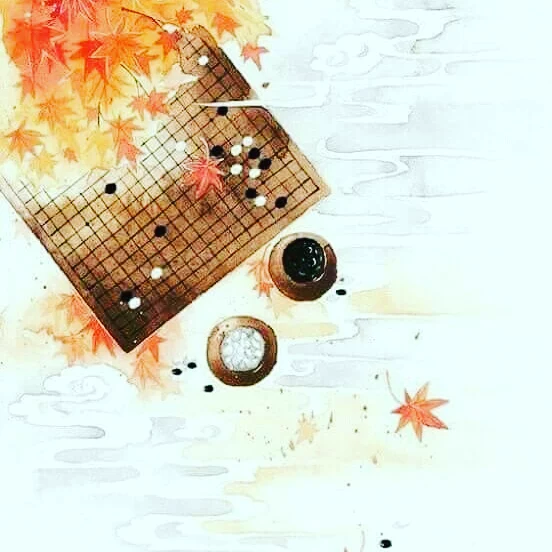

Go Nedir?
4.000 yılı aşkın geçmişiyle dünyanın en eski strateji oyunlarından biri. Çin'de Weiqi, Japonya'da Go, Kore'de Baduk. Öğrenmesi bir saate bakıyor. Ustalaşması ömre.
İki oyuncu, bir tahta, sonsuz olasılık
Siyah ve beyaz taşlarla oynanan Go'da amaç basit: tahtada daha fazla bölge çevirmek ve rakip taşları esir almak.
Satranç gibi karmaşık figürler yok, ezberlenecek hamle yok. Birkaç temel kural — ama bu kurallardan doğan stratejinin derinliği hiçbir oyunla karşılaştırılamaz.
Olası Go partisi sayısı, evrendeki atom sayısını geçer. Her oyun yeni bir evren.

Strateji oyunlarının zirvesi
Sonsuz derinlik
Kurallar birkaç dakikada öğrenilir. Mümkün parti sayısı evrendeki atomları geçer.
Sezgi ve strateji
Satranç hesaba dayanır, Go sezgiye. Büyük resmi görmek küçük taktiklerden daha önemlidir.
Her yaşa açık
8 yaşında çocuk da 80 yaşında büyükanne de aynı tahtada eşit başlar. Deneyim değil, düşünce belirler.
Konsantrasyon
Her hamle tüm tahtayı etkiler. Go oynamak, dikkatini tek bir noktada tutmayı öğretir.
"2016'ya kadar yapay zeka bir Go ustasını yenemedi. Satranç makineleri insanı onlarca yıl önce geçmişti — Go o kadar derin."

9×9 tahtayla başlayın
Tam boyut 19×19 tahta ilk bakışta büyük görünebilir. 9×9 tahta, temel kavramların tamamını — nefes noktaları, taş alma, bölge, esir — kısa sürede öğrenmek için mükemmeldir.
Antalya Go eğitimlerinde ve bu platformda hep 9×9 ile başlarız. İlk partini birkaç dakika içinde oynayabilirsin.